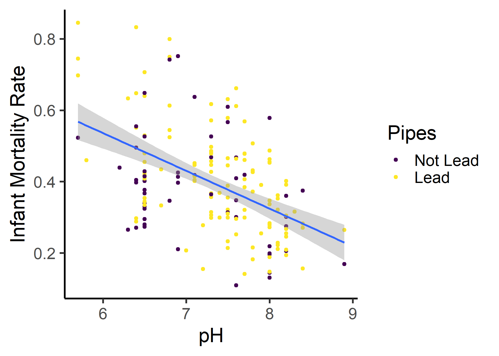
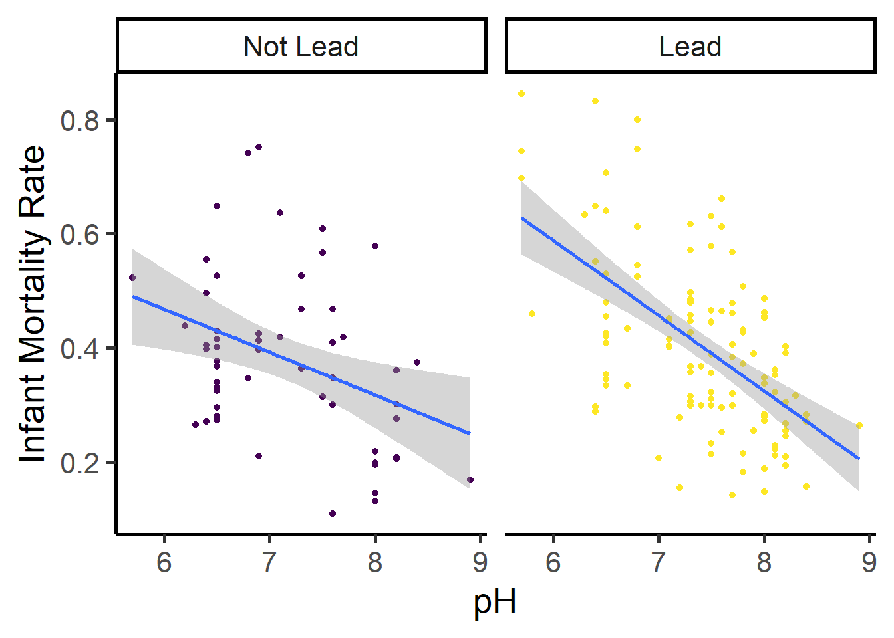
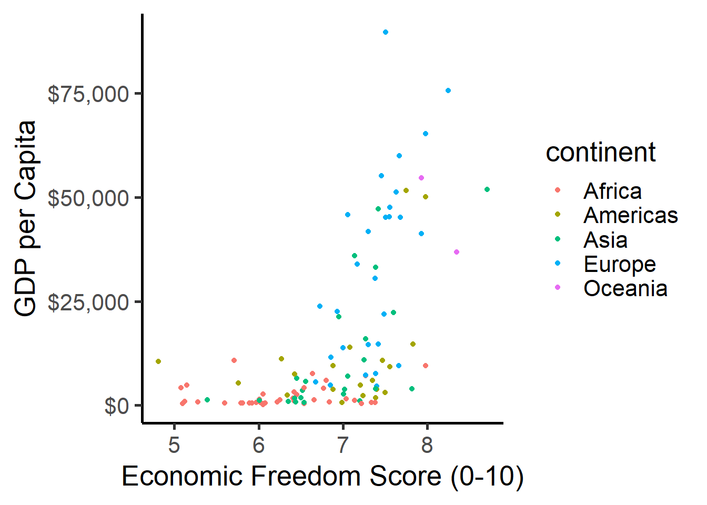
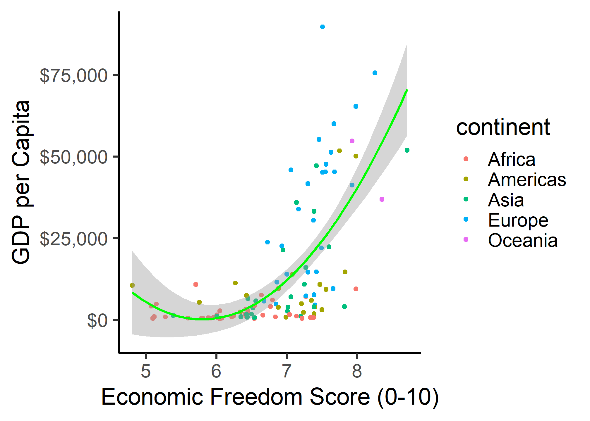
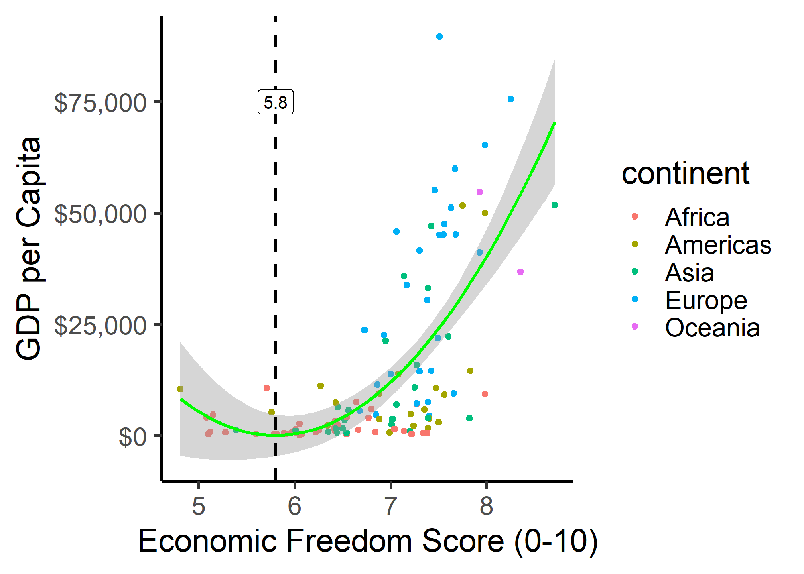
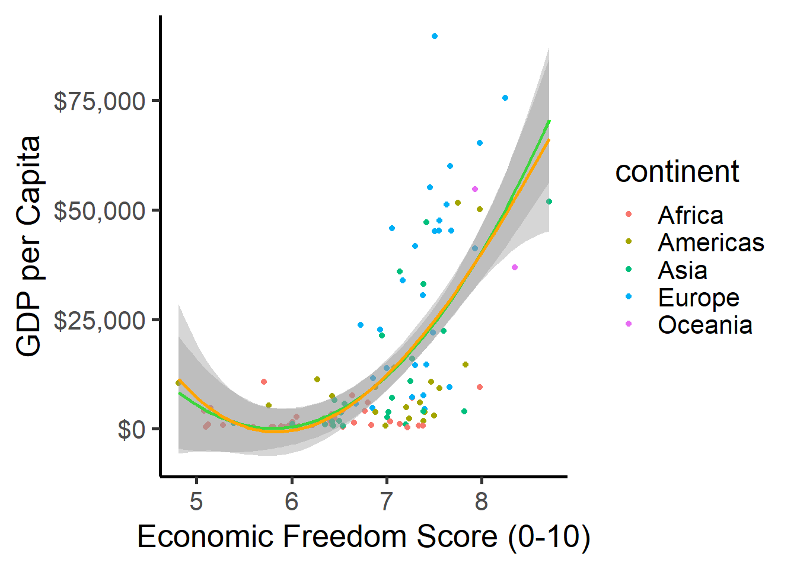
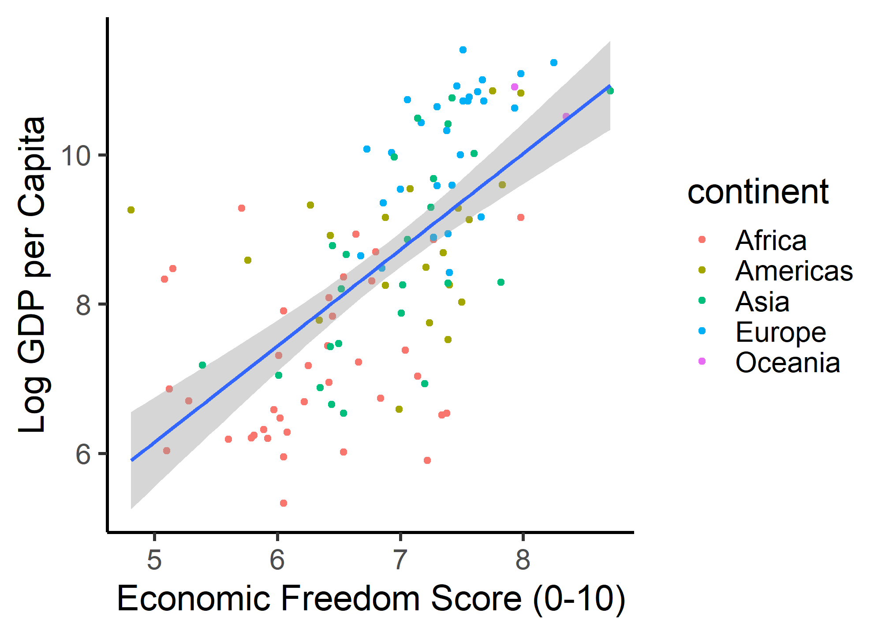

Code
# load tidyverse
library("tidyverse")
library(haven)
# read in data
lead <- read_dta("lead_mortality.dta")Zahid Asghar
School of Economics, QAU, Islamabad
Answer the following questions using R. When necessary, please write answers in the same document (knitted Rmd to html or pdf, typed .doc(x), or handwritten) as your answers to the above questions. Be sure to include (email or print an .R file, or show in your knitted markdown) your code and the outputs of your code with the rest of your answers. I am using this post material from Ryan Safner
Lead is toxic, particularly for young children, and for this reason government regulations severely restrict the amount of lead in our environment. In the early part of the 20th century, the underground water pipes in many U.S. cities contained lead, and lead from these pipes leached into drinking water. This exercise will have you investigate the effect of these lead pipes on infant mortality. This dataset contains data on:
| Variable | Description |
|---|---|
infrate |
infant mortality rate (deaths per 100 in population) |
lead |
\(=1\) if city has lead water pipes, \(=0\) if did not have lead pipes |
pH |
water pH |
and several demographic variables for 172 U.S. cities in 1900.
Part A
Using R to examine the data, find the average infant mortality rate for cities with lead pipes and for cities without lead pipes. Calculate the difference, and run a \(t\)-test to determine if this difference is statistically significant.
# load tidyverse
library("tidyverse")
library(haven)
# read in data
lead <- read_dta("lead_mortality.dta")# mean of infrate for cities with lead
mean_lead <- lead %>%
filter(lead == 1) %>%
summarize(mean(infrate)) %>%
pull() # to save as number
# look at it
mean_lead[1] 0.4032576# mean of infrate for cities with no lead
mean_no_lead <- lead %>%
filter(lead == 0) %>%
summarize(mean(infrate)) %>%
pull() # to save as number
# look at it
mean_no_lead[1] 0.3811679# take difference
mean_lead - mean_no_lead[1] 0.02208973Cities with lead pipes have an infant mortality rate of 0.40, and cities without lead pipes have an infant mortality rate of 0.38. So the difference is 0.02.
# run t-test of difference
t.test(infrate ~ lead, data = lead)
Welch Two Sample t-test
data: infrate by lead
t = -0.90387, df = 109.29, p-value = 0.3681
alternative hypothesis: true difference in means between group 0 and group 1 is not equal to 0
95 percent confidence interval:
-0.07052551 0.02634606
sample estimates:
mean in group 0 mean in group 1
0.3811679 0.4032576 We get a \(t\)-statistic of \(-0.90\) and a \(p\)-value of \(0.3681\), so the difference is not statistically significant.
Run a regression of infrate on lead, and write down the estimated regression equation. Use the regression coefficients to find:
lead_reg1 <- lm(infrate ~ lead, data = lead)
summary(lead_reg1)
Call:
lm(formula = infrate ~ lead, data = lead)
Residuals:
Min 1Q Median 3Q Max
-0.27141 -0.10643 -0.01238 0.07528 0.44121
Coefficients:
Estimate Std. Error t value Pr(>|t|)
(Intercept) 0.38117 0.02042 18.669 <2e-16 ***
lead 0.02209 0.02475 0.892 0.373
---
Signif. codes: 0 '***' 0.001 '**' 0.01 '*' 0.05 '.' 0.1 ' ' 1
Residual standard error: 0.1514 on 170 degrees of freedom
Multiple R-squared: 0.004662, Adjusted R-squared: -0.001193
F-statistic: 0.7963 on 1 and 170 DF, p-value: 0.3735\[\widehat{\text{Infrate}_i} = 0.38+0.02 \, \text{Lead}_i\]
Does the pH of the water matter? Include ph in your regression from part B. Write down the estimated regression equation, and interpret each coefficient (note there is no interaction effect here). What happens to the estimate on lead?
lead_reg2 <- lm(infrate ~ lead + ph, data = lead)
summary(lead_reg2)
Call:
lm(formula = infrate ~ lead + ph, data = lead)
Residuals:
Min 1Q Median 3Q Max
-0.27074 -0.09140 -0.01517 0.07909 0.34222
Coefficients:
Estimate Std. Error t value Pr(>|t|)
(Intercept) 1.17817 0.10676 11.035 < 2e-16 ***
lead 0.04993 0.02177 2.294 0.023 *
ph -0.11143 0.01472 -7.570 2.31e-12 ***
---
Signif. codes: 0 '***' 0.001 '**' 0.01 '*' 0.05 '.' 0.1 ' ' 1
Residual standard error: 0.1312 on 169 degrees of freedom
Multiple R-squared: 0.2567, Adjusted R-squared: 0.2479
F-statistic: 29.18 on 2 and 169 DF, p-value: 1.299e-11\[\widehat{\text{Infrate}_i}=1.17+0.05 \, \text{Lead}_i-0.11 \, \text{pH}_i\]
The estimate on lead doubled and became significant at the 5% level.
The amount of lead leached from lead pipes normally depends on the chemistry of the water running through the pipes: the more acidic the water (lower pH), the more lead is leached. Create an interaction term between lead and pH, and run a regression of infrate on lead, pH, and your interaction term. Write down the estimated regression equation. Is this interaction significant?
lead_reg3 <- lm(infrate ~ lead + ph + lead:ph, data = lead)
summary(lead_reg3)
Call:
lm(formula = infrate ~ lead + ph + lead:ph, data = lead)
Residuals:
Min 1Q Median 3Q Max
-0.27492 -0.09502 -0.00266 0.07965 0.35139
Coefficients:
Estimate Std. Error t value Pr(>|t|)
(Intercept) 0.91890 0.17447 5.267 4.2e-07 ***
lead 0.46180 0.22122 2.087 0.03835 *
ph -0.07518 0.02427 -3.098 0.00229 **
lead:ph -0.05686 0.03040 -1.871 0.06312 .
---
Signif. codes: 0 '***' 0.001 '**' 0.01 '*' 0.05 '.' 0.1 ' ' 1
Residual standard error: 0.1303 on 168 degrees of freedom
Multiple R-squared: 0.2719, Adjusted R-squared: 0.2589
F-statistic: 20.91 on 3 and 168 DF, p-value: 1.467e-11\[\widehat{\text{Infrate}_i}=0.92+0.46 \, \text{Lead}_i-0.08 \, \text{pH}_i- \, 0.06 \, (\text{Lead} \times \text{pH})\]
We see that this interaction is just barely insignificant, with a \(p\)-value of 0.06.
What we actually have are two different regression lines. Visualize this with a scatterplot between infrate \((Y)\) and ph \((X)\) by lead.
lead_scatter <- ggplot(data = lead)+
aes(x = ph,
y = infrate)+
geom_point(aes(color = as.factor(lead)))+ # making it a factor makes color discrete rather than continuous!
geom_smooth(method = "lm")+
# now I'm just making it pretty
# changing color
scale_color_viridis_d("Pipes",
labels = c("0" = "Not Lead",
"1" = "Lead"))+ # changing labels for colors
labs(x = "pH",
y = "Infant Mortality Rate")+
theme_classic(base_family = "Fira Sans Condensed",
base_size=20)
lead_scatter
lead_scatter + facet_wrap(~lead,
labeller = labeller(lead = c("0" = "Not Lead",
"1" = "Lead")))+ # change facet titles
guides(color = F) # hide other legend
Do the two regression lines have the same intercept? The same slope? Use the original regression in part D to test these possibilities.
\(\beta_1\) (on lead) measures the difference in intercept between the lead & no lead regression lines. So we would want to test:
\[\begin{align*} H_0: & \beta_1=0\\ H_a: & \beta_1 \neq 0\\ \end{align*}\]
The R output tells us \(\hat{\beta_1}\) is \(0.46\) with a standard error of 0.22, so the \(t\)-statistic for this test is \(2.09\) with a \(p\)-value of 0.04, so there is a statistically significant difference at the 5% level.
\(\beta_3\) (on the interaction term) measures the difference in slope between the lead & no lead regression lines. So we would want to test:
$$\[\begin{align*} H_0: & \beta_3=0\\ H_a: & \beta_3 \neq 0\\ \end{align*}\]$$
The output tells us \(\hat{\beta_3}\) is \(-0.06\) with a standard error of 0.3, so the \(t\)-statistic for this test is \(-1.87\) with a \(p\)-value of \(0.06\), so there is not a statistically significant difference at the 5% level.
Therefore, they have difference intercepts, and the same slopes, statistically.
Take your regression equation from part D and rewrite it as two separate regression equations (one for no lead and one for lead). Interpret the coefficients for each.
For no lead (lead=0):
\[\begin{align*} \widehat{Infrate}&=0.92+0.46 \, Lead-0.08 \, pH-0.06\, (Lead \times pH)\\ &=0.92+0.46(\mathbf{0})-0.08pH-0.06((\mathbf{0}) \times pH)\\ &=0.92-0.08 \, pH\\ \end{align*}\]
For lead (lead=1):
$$\[\begin{align*} \widehat{Infrate}&=0.92+0.46 \, Lead-0.08 \, pH-0.06\, (Lead \times pH)\\ &=0.92+0.46(\mathbf{1})-0.08pH-0.06((\mathbf{1}) \times pH)\\ &=(0.92+0.46)+(-0.08-0.06) \, pH\\ &=1.30-0.14 \, pH\\ \end{align*}\]$$
Cities without lead pipes have an infant mortality rate of \(0.92\) \((\hat{\beta_0}\) from reg 1) vs. cities with lead pipes have an infant mortality rate of \(1.30\) (\(\hat{\beta_0}\) from reg 2). For every additional unit of pH, the infant mortality rate of a city without lead pipes would decrease by 0.06 \((\hat{\beta_1}\) from reg 1) vs. a city with lead pipes which would see a fall of 0.14.
So again, we can see the difference in infant mortality rates between cities with lead pipes vs. those that don’t, with a water pH of 0 is \(1.30-0.92=\$0.38\), \((\hat{\beta_0}\) from the regression in (part d)), and the cities with lead raise their infant mortality rates by \(0.14-0.08=0.06\) more from each unit of pH than cities without lead do \((\hat{\beta_3})\) from the regression in (part d)).
Double check your calculations in G are correct by running the regression in D twice, once for cities without lead pipes and once for cities with lead pipes. [Hint: filter() the data first, then use the filtered data for the data= in each regression.]
# regression for no lead
lead %>%
filter(lead == 0) %>%
lm(data = ., infrate ~ lead + ph + lead:ph) %>%
summary()
Call:
lm(formula = infrate ~ lead + ph + lead:ph, data = .)
Residuals:
Min 1Q Median 3Q Max
-0.23779 -0.09733 -0.01506 0.07053 0.35139
Coefficients: (2 not defined because of singularities)
Estimate Std. Error t value Pr(>|t|)
(Intercept) 0.91890 0.18543 4.955 7.77e-06 ***
lead NA NA NA NA
ph -0.07518 0.02579 -2.915 0.00521 **
lead:ph NA NA NA NA
---
Signif. codes: 0 '***' 0.001 '**' 0.01 '*' 0.05 '.' 0.1 ' ' 1
Residual standard error: 0.1385 on 53 degrees of freedom
Multiple R-squared: 0.1381, Adjusted R-squared: 0.1219
F-statistic: 8.495 on 1 and 53 DF, p-value: 0.005206# regression for lead
lead %>%
filter(lead == 1) %>%
lm(data = ., infrate ~ lead + ph + lead:ph) %>%
summary()
Call:
lm(formula = infrate ~ lead + ph + lead:ph, data = .)
Residuals:
Min 1Q Median 3Q Max
-0.27492 -0.08881 0.00664 0.08059 0.31646
Coefficients: (2 not defined because of singularities)
Estimate Std. Error t value Pr(>|t|)
(Intercept) 1.38070 0.13189 10.47 < 2e-16 ***
lead NA NA NA NA
ph -0.13204 0.01775 -7.44 1.97e-11 ***
lead:ph NA NA NA NA
---
Signif. codes: 0 '***' 0.001 '**' 0.01 '*' 0.05 '.' 0.1 ' ' 1
Residual standard error: 0.1263 on 115 degrees of freedom
Multiple R-squared: 0.325, Adjusted R-squared: 0.3191
F-statistic: 55.36 on 1 and 115 DF, p-value: 1.967e-11Use huxtable to make a nice output table of all of your regressions from parts B, C, and D.
library(huxtable)
huxreg(lead_reg1,
lead_reg2,
lead_reg3,
coefs = c("Constant" = "(Intercept)",
"Lead Pipes" = "lead",
"pH" = "ph",
"Lead * pH" = "lead:ph"),
statistics = c("N" = "nobs",
"R-Squared" = "r.squared",
"SER" = "sigma"),
number_format = 2)| (1) | (2) | (3) | |
|---|---|---|---|
| Constant | 0.38 *** | 1.18 *** | 0.92 *** |
| (0.02) | (0.11) | (0.17) | |
| Lead Pipes | 0.02 | 0.05 * | 0.46 * |
| (0.02) | (0.02) | (0.22) | |
| pH | -0.11 *** | -0.08 ** | |
| (0.01) | (0.02) | ||
| Lead * pH | -0.06 | ||
| (0.03) | |||
| N | 172 | 172 | 172 |
| R-Squared | 0.00 | 0.26 | 0.27 |
| SER | 0.15 | 0.13 | 0.13 |
| *** p < 0.001; ** p < 0.01; * p < 0.05. | |||
Let’s look at economic freedom and GDP per capita using some data I sourced from Gapminder1, Freedom House2 and Fraser Institute Data3 and cleaned up for you, with the following variables:
| Variable | Description |
|---|---|
Country |
Name of country |
ISO |
Code of country (good for plotting) |
econ_freedom |
Economic Freedom Index score (2016) from 1 (least) to 10 (most free) |
pol_freedom |
Political freedom index score (2018) from 1 (least) top 10 (most free) |
gdp_pc |
GDP per capita (2018 USD) |
continent |
Continent of country |
Does economic freedom affect GDP per capita? Create a scatterplot of gdp_pc (Y) against econ_freedom (x). Does the effect appear to be linear or nonlinear?
# load data
freedom <- read_csv("freedom.csv")freedom_plot <- ggplot(data = freedom)+
aes(x = econ_freedom,
y = gdp_pc)+
geom_point(aes(color = continent))+
scale_y_continuous(labels = scales::dollar)+
labs(x = "Economic Freedom Score (0-10)",
y = "GDP per Capita")+
theme_classic(base_family = "Fira Sans Condensed",
base_size = 20)
freedom_plot
The effect appears to be nonlinear.
Run a simple regression of gdp_pc on econ_freedom. Write out the estimated regression equation. What is the marginal effect of econ_freedom on gdp_pc?
freedom_reg1 <- lm(gdp_pc ~ econ_freedom, data = freedom)
summary(freedom_reg1)
Call:
lm(formula = gdp_pc ~ econ_freedom, data = freedom)
Residuals:
Min 1Q Median 3Q Max
-24612 -10511 -3707 9727 65562
Coefficients:
Estimate Std. Error t value Pr(>|t|)
(Intercept) -86400 13362 -6.466 2.85e-09 ***
econ_freedom 14704 1935 7.599 1.06e-11 ***
---
Signif. codes: 0 '***' 0.001 '**' 0.01 '*' 0.05 '.' 0.1 ' ' 1
Residual standard error: 15880 on 110 degrees of freedom
Multiple R-squared: 0.3442, Adjusted R-squared: 0.3383
F-statistic: 57.74 on 1 and 110 DF, p-value: 1.063e-11Let’s try a quadratic model. Run a quadratic regression of gdp_pc on econ_freedom. Write out the estimated regression equation.
freedom_reg2 <- lm(gdp_pc ~ econ_freedom + I(econ_freedom^2),
data = freedom)
summary(freedom_reg2)
Call:
lm(formula = gdp_pc ~ econ_freedom + I(econ_freedom^2), data = freedom)
Residuals:
Min 1Q Median 3Q Max
-30174 -8366 -647 2980 65158
Coefficients:
Estimate Std. Error t value Pr(>|t|)
(Intercept) 280417 79511 3.527 0.000617 ***
econ_freedom -96619 23908 -4.041 9.93e-05 ***
I(econ_freedom^2) 8327 1783 4.669 8.67e-06 ***
---
Signif. codes: 0 '***' 0.001 '**' 0.01 '*' 0.05 '.' 0.1 ' ' 1
Residual standard error: 14560 on 109 degrees of freedom
Multiple R-squared: 0.4535, Adjusted R-squared: 0.4435
F-statistic: 45.23 on 2 and 109 DF, p-value: 4.986e-15Add the quadratic regression to your scatterplot.
freedom_plot +
geom_smooth(method = "lm", formula = "y~x+I(x^2)", color = "green")
What is the marginal effect of econ_freedom on gdp_pc?
The marginal effect can be found by taking the derivative of the regression with respect to econ_freedom (or recalling the rule):
\[\begin{align*} \frac{d \, Y}{d \, X} &= \beta_1+2\beta_2 X\\ \frac{d \, GDPpc}{d \, econfreedom} &= -96618+2(8327)econfreedom\, econ\\ &=-96618+16654 \, econfreedom\\ \end{align*}\]
# if you want to calculate it in R
library(broom)
freedom_reg2_tidy <- tidy(freedom_reg2)
freedom_beta_1 <- freedom_reg2_tidy %>%
filter(term == "econ_freedom") %>%
pull(estimate)
freedom_beta_2 <- freedom_reg2_tidy %>%
filter(term == "I(econ_freedom^2)") %>%
pull(estimate)
# freedom_beta_1+2*freedom_beta_2* # numberAs a quadratic model, this relationship should predict anecon_freedom score where gdp_pc is at a minimum. What is that minimum Economic Freedom score, and what is the associated GDP per capita?
We can set the derivative equal to 0, or you can just remember the formula and plug in the parameters:
$$\[\begin{align*} \frac{d Y}{d X} &= \beta_1+2\beta_2 X\\ 0 &=\beta_1+2\beta_2 X\\ -\beta_1&=2\beta_2 X\\ -\frac{1}{2} \times \frac{\beta_1}{\beta_2}&=econfreedom^*\\ -\frac{1}{2} \times\frac{(-96618)}{(8327)} &= econfreedom^*\\ -\frac{1}{2} \times -11.603 & \approx econfreedom^*\\ 5.801 & \approx econfreedom ^*\\ \end{align*}\]$$
# to calculate in R
min <- -0.5*(freedom_beta_1/freedom_beta_2)
min[1] 5.801793# let's visualize on the scatterplot
freedom_plot +
geom_smooth(method = "lm", formula = "y~x+I(x^2)", color = "green")+
geom_vline(xintercept = min, linetype = "dashed", size = 1)+
geom_label(x = min, y = 75000, label = round(min,2))
Run a cubic model to see if we should keep going up in polynomials. Write out the estimated regression equation. Should we add a cubic term?
freedom_reg3 <- lm(gdp_pc ~ econ_freedom + I(econ_freedom^2)+ I(econ_freedom^3),
data = freedom)
summary(freedom_reg3)
Call:
lm(formula = gdp_pc ~ econ_freedom + I(econ_freedom^2) + I(econ_freedom^3),
data = freedom)
Residuals:
Min 1Q Median 3Q Max
-30290 -8451 -493 3356 64636
Coefficients:
Estimate Std. Error t value Pr(>|t|)
(Intercept) 531003.4 470172.4 1.129 0.261
econ_freedom -211572.5 213908.4 -0.989 0.325
I(econ_freedom^2) 25674.4 32127.4 0.799 0.426
I(econ_freedom^3) -862.2 1594.2 -0.541 0.590
Residual standard error: 14610 on 108 degrees of freedom
Multiple R-squared: 0.455, Adjusted R-squared: 0.4399
F-statistic: 30.05 on 3 and 108 DF, p-value: 3.318e-14There’s no good theoretical reason why we should expect economic freedom to “change direction” twice - go down, then up, then down again - in its effect on GDP.
Statistically, we can see that \(\hat{\beta_3}\) on I(econ_freedom^3) is not significant (p-value is 0.590), so we should not include the cubic term.
# let's visualize it on the scatterplot
freedom_plot+
geom_smooth(method = "lm", formula = "y~x+I(x^2)", color = "green")+
geom_smooth(method = "lm", formula = "y~x+I(x^2)+I(x^3)", color = "orange")
Another way we can test for non-linearity is to run an \(F\)-test on all non-linear variables - i.e. the quadratic term and the cubic term \((\hat{\beta_2}\) and \(\hat{\beta_3}\)) and test against the null hypothesis that: \[H_0: \hat{\beta_2} = \hat{\beta_3} = 0\]
Run this joint hypothesis test, and what can you conclude?
# run F test
library(car)
linearHypothesis(freedom_reg3, c("I(econ_freedom^2)", "I(econ_freedom^3)"))The null hypothesis is that the polynomial terms (quadratic and cubic) jointly do not matter (and the relationship is therefore linear). We have sufficient evidence to reject that hypothesis (p-value is very small). Thus, the relationship is in fact not linear.
Instead of a polynomial model, try out a logarithmic model. It is hard to interpret percent changes on an index, but it is easy to understand percent changes in GDP per capita, so run a log-linear regression. Write out the estimated regression equation. What is the marginal effect of econ_freedom?
# log linear model
freedom_reg4 <- lm(log(gdp_pc) ~ econ_freedom, data = freedom)
summary(freedom_reg4)
Call:
lm(formula = log(gdp_pc) ~ econ_freedom, data = freedom)
Residuals:
Min 1Q Median 3Q Max
-3.1046 -0.9507 -0.0533 0.9021 3.3551
Coefficients:
Estimate Std. Error t value Pr(>|t|)
(Intercept) -0.2953 1.0323 -0.286 0.775
econ_freedom 1.2889 0.1495 8.621 5.53e-14 ***
---
Signif. codes: 0 '***' 0.001 '**' 0.01 '*' 0.05 '.' 0.1 ' ' 1
Residual standard error: 1.227 on 110 degrees of freedom
Multiple R-squared: 0.4032, Adjusted R-squared: 0.3978
F-statistic: 74.32 on 1 and 110 DF, p-value: 5.525e-14For every 1 point increase on the economic freedom index, a country’s GDP per capita increases by \(1.2889 \times 100\%=128.90\%\)
Make a scatterplot of your log-linear model with a regression line.
log_freedom_plot <- ggplot(data = freedom)+
aes(x = econ_freedom,
y = log(gdp_pc))+
geom_point(aes(color = continent))+
geom_smooth(method = "lm")+
labs(x = "Economic Freedom Score (0-10)",
y = "Log GDP per Capita")+
theme_classic(base_family = "Fira Sans Condensed",
base_size = 20)
log_freedom_plot
Put all of your results together in a regression output table with huxtable from your answers in questions B, C, G, and H.
huxreg("GDP per Capita" = freedom_reg1,
"GDP per Capita" = freedom_reg2,
"Log(GDP per Capita)" = freedom_reg3,
coefs = c("Constant" = "(Intercept)",
"Economic Freedom Score (0-10)" = "econ_freedom",
"Economic Freedom Squared" = "I(econ_freedom^2)",
"Economic Freedom Cubed" = "I(econ_freedom^3)"),
statistics = c("N" = "nobs",
"R-Squared" = "r.squared",
"SER" = "sigma"),
number_format = 2)| GDP per Capita | GDP per Capita | Log(GDP per Capita) | |
|---|---|---|---|
| Constant | -86400.07 *** | 280416.48 *** | 531003.39 |
| (13361.77) | (79511.27) | (470172.38) | |
| Economic Freedom Score (0-10) | 14704.30 *** | -96618.52 *** | -211572.48 |
| (1935.13) | (23908.06) | (213908.44) | |
| Economic Freedom Squared | 8326.61 *** | 25674.41 | |
| (1783.32) | (32127.38) | ||
| Economic Freedom Cubed | -862.15 | ||
| (1594.20) | |||
| N | 112 | 112 | 112 |
| R-Squared | 0.34 | 0.45 | 0.45 |
| SER | 15881.92 | 14564.43 | 14611.94 |
| *** p < 0.001; ** p < 0.01; * p < 0.05. | |||